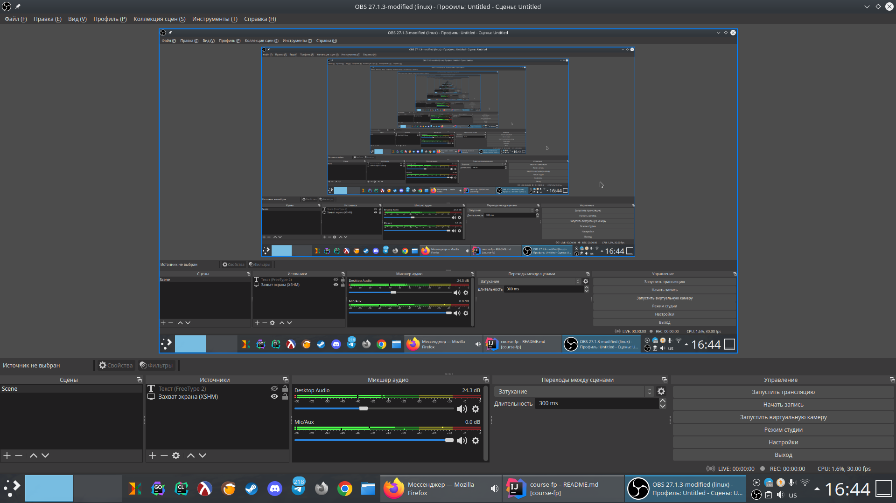

Курс по основам функционального программирования (ФП)
Автор: Стасенко К.Ю. - выпускник ТАТК ГА 2022 г.
Год: 2022 - 2023
Github: Stasenko-Konstantin
Почта: stasenko.kost@yandex.ru
пишите, с нетерпением жду любых откликов
Учебный курс предназначен для курсантов 2-го и 3-го курсов очной и заочной форм обучения по специальности "Программирование в компьютерных системах" в качестве дополнительной учебной программы к предмету "Основы программирования", а также просто всем интересующимся.
После прохождения данного курса вы освоите дополнительные профессиональные компетенции для осуществления своей профессиональной деятельности. Научитесь применять функциональный подход к решению программистских задач практически независимо от применяемого вами языка программирования. Для этого в курсе будут использованы следующие ЯП: Python, Racket.
Помимо теоретической части курса вы также ознакомитесь и научитесь применять следующие техники и приемы:
- Использование рекурсии (линейной, разветвляющейся и хвостовой).
- Функции высших порядков (ФВП).
- Основные функциональные комбинаторы (map, filter, fold и пр.).
- Использование замыканий (в том числе для эмуляции средств ООП)
- и дефункционализацию (преобразование функционального кода в императивный/объектный)
Требования к курсанту
От вас требуется базовое знание языка программирования Python и компьютерной грамотности, а именно:
- Базовые типы данных (int, float, bool, str и пр.).
- Базовые управляющие конструкция (if, while, for).
- Использование именованных функций (def). Плюсом будет знание об анонимных лямбда-функциях.
- Умение пользоваться консолью (командной строкой).
Вы можете скачать все материалы курса и проходить обучение на своей локальной машине. Для этого вы можете воспользоваться утилитой Git следующим образом:
git clone https://github.com/Stasenko-Konstantin/course-fp.git
или же скачать zip-архив по этой ссылке
Крайне советую переходить по ссылкам, там очень много всего интересного.
Шпаргалка
Части абстрактного синтаксиса:
f- имя функцииx- параметр функцииnum- числоvar- переменнаяexpr- любое допустимое выражение*stmt- любой допустимый набор инструкций*cond- любое допустимое булевское выражение...- возможное повторение предыдущего элемента произвольное кол-во раз
| Expr | Python | Racket |
|---|---|---|
| Арифметика | num + num + num ... | (+ num num num ...) |
| Глобальное присваивание | var = expr | (define var expr) |
| Локальное присваивание** | var = expr | (let ([var expr] ...)expr) |
| Объявление функции | def f(x, ...):stmt | (define (f x ...)expr...) |
| Лямбды | lambda x, ...: expr | (lambda (x ...) expr ...) |
| Вызов функции | f(x) | (f x) |
| Истина | True | #t |
| Ложь | False | #f |
| И | cond and cond | (and cond ...) |
| ИЛИ | cond or cond | (or cond ...) |
| НЕ | not cond | (not cond) |
| Последовательный набор инструкций | stmt | (beginexpr...) |
| Условное ветвление | if cond:stmtelse: stmt | (if condexprexpr) |
| Условное ветвление | if cond:stmtelif cond:stmt...else: stmt | (cond [ cond expr]...[else expr]) |
* Обсуждение на stackoverflow
о разнице между выражениями и инструкциями, как раз применительно к Python, на английском.
И документация Racket
по этому же вопросу, тоже на английском.
** Переменные доступные в теле функции. В случае Racket объявленные в let переменные доступны только в теле этого
самого let, т.е. в expr.
Введение
“The programmers of tomorrow are the wizards of the future.
You're going to look like you have magic powers compared to
everyone else.”
Гейб Ньюэлл - основатель Valve
“The programs we use to conjure processes are like a
sorcerer's spells. They are carefully composed from symbolic
expressions in arcane and esoteric programming languages.”
Гарольд Абельсон и Джеральд Джей Сассман, Стуктура и Интерпретация Компьютерных Программ
Перед тем как мы приступим к "скучным" теоретезированиям и рассмотрениям практической стороны вопроса хотелось бы сказать пару слов, поделиться своим мнением так сказать. Для меня функциональное программирование это что-то необычное, можно даже сказать волшебное. И не для меня одного на самом деле. Одна из главных книг по ФП (и Lisp'у) - SICP, имеет в качестве обложки следующую иллюстрацию:

которая наглядно демонстрирует то как воспринималось (и, наверное, воспринимается до сих пор) как ФП в целом, так и Lisp в частности. Я хочу чтобы этот учебный материал стал для вас входом в этот интересный функциональный мир (или наверное правильней страну). Когда пишешь функциональный код, кажется будто ты решаешь головоломку, порой извилины довольно приятно скрипят при этом) А если этот код еще и обрамлен в скобочки, то кажется будто ты действительно какой-то хакер-волшебник. Новый взгляд на решение программистских задач и проблем может дать вам практическую альтернативу тому к чему вы уже привыкли. Это может испортить вас (так же как и меня когда-то)) Однажды взглянув на вещи через функциональную призму вы уже не сможете просто так вернуться к другим языкам, не требуя от них той же гибкости в которой вы теперь нуждаетесь.
Впрочем, покончим с сантиментами и приступим уже к делу. Пробежимся кратко по сухой и скучноватой части
и займемся чем поинтересней. Начать думаю стоит с истории - истоками
ФП принято считать изобретение Алонзо Черчем в 30-х годах прошлого века формальной системы
именуемой лямбда-исчислением (λ-calculus). Оно предназначено для формализации и анализа понятия вычислимости, ровно как
и Машина Тьюринга. Оба эти формализма легли в основу языков программирования и
используемых ими парадигм. Так Машина Тьюринга представляет собой
императивную парадигму, а лямбда-исчисление - функциональную.
Существует множество вариаций лямбда-исчисления, но в базе своей
оно про анонимные функции, т.е. лямбды. В общем виде
они выглядят так:
λx.xy
что эквивалентно следующей конструкции языка Python:
lambda x: x(y)
Как мы видим символ λ заменили на lambda, вместо
. используется :, а применение функции требует
круглых скобок. Помимо синтаксических различий тут
также можно увидеть одну интересную семантическую деталь -
наша анонимная функция принимает в качестве параметра
другую функцию, это и называется функциями высших порядков (ФВП).
А такие объекты которые мы можем также свободно использовать,
как и остальные, более привычные нам, как например числа и строки,
называются объектами или гражданами первого класса, или
первоклассными объектами. Это все более подробно мы обсудим позже.
Появление лямбда-исчисления вызвало интерес не только
со стороны математиков, но и у программистов, что неудивительно -
раньше если ты был программистом, то, скорее всего был и математиком.
В пользу этого говорит тот факт, что первым языком программирования был
создан Fortran - язык для научных вычислений который применяется до сих пор.
Вторым же языком программирования стал Lisp и он в некоторой
степени основывался как раз на лямбда-исчислении. Эти два языка очень сильно
отличались друг от друга, но они оба сильно повлияли на
будущее как языков программирования, так и самого программирования в целом.
Так например именно в Lisp`е впервые реализовали такие вещи как:
динамическая типизация, сборка мусора, REPL, замыкания и пр.
Многие вещи в которых Lisp стал первопроходцем легли в основу
не только функциональных языков, но и многих других и уже
привычны нам, осталось только научиться ими пользоваться.
На данный момент Lisp сильно изменился. Лиспами называется уже не один
язык, а целое семейство, среди которых наиболее видные: Common Lisp,
Scheme и Clojure. Они все разные, но у них общее начало, то что делает их
лиспами.
TODO: допиши абзац
Еще одной важной вехой в истории ФП можно считать появление
в 1990 году такого языка программирования как Haskell.
Он был создан специальным комитетом, чтобы объединить разрозненные
на тот момент идеи ФП в одном языке и развивать их уже более
централизованно. Т.е. можно сказать что Haskell это своего рода
лаборатория по изучению и исследованию всевозможных теорий
из таких областей как: ФП, теория языков программирования, компиляторостроение.
Этот язык оказал огромное влияние на последующие исследования в этих областях.
На данный момент существует явная тенденция - большинство популярных и наиболее используемых языков
программирования стремится к мультипарадигмальнности и чистых языков сейчас почти не найти. Даже такие консервативные языки как
C++ и Java внедряют в свои новые версии элементы ФП, а в C# и вовсе существует встроенный язык запросов (eDSL)
под названием LINQ который позволяет писать элегантный и надежный код в функциональном стиле. Также хочется
упомянуть язык Rust сочетающий в себе лучшие качества таких системных языков как C и C++ и функциональных языков
семейства ML (SML, Ocaml, Haskell и пр.), он на протяжении уже нескольких лет подряд является
любимым языком среди разработчиков по версии Stackoverflow.
Что еще примечательно, 2-е и 3-е места в этом рейтинге занимают функциональные языки Elixir и Clojure (также диалект Lisp'а).
Поэтому если вы хотите стать более лучшими, профессиональными, а главное счастливыми программистами, то вы там где нужно!
Успехов!
Знакомство с Racket и DrRacket
Сперва стоит ответить на два вопроса - почему нельзя обойтись одним только Python'ом и почему Racket, почему
не какой-нибудь другой функциональный язык, например чисто функциональный Haskell или более близкий к Python язык Scala (ИМХО)?
Отвечая на первый вопрос скажу что вполне можно было обойтись одним Python'ом, но по личному опыту
писать в функциональном стиле на нем не особо приятно. Это будет заметно при сравнении различных
сниппетов кода ниже. Отвечая на второй вопрос могу сказать что Racket, во-первых, довольно прост в своей
основе, во-вторых, использование Scheme (Racket - диалект Scheme) в учебных целях
уже считается некой традицией, в-третьих, не придется ломать вас через колено как было бы используй
я Haskell вместо Racket. В качестве примера приведу следующие сниппеты:
# python
def sum(n1, n2):
return n1 + n2
; racket
(define (sum n1 n2)
(+ n1 n2))
-- haskell
sum :: Int -> Int -> Int
sum = (+)
-- или просто
sum = (+)
// scala
def sum(n1: Int, n2: Int): Int = n1 + n2
Надеюсь я ответил на эти вопросы.
Помимо этого вспоминаются такие слова известного ученого в области информатики
Эдгара Дийкстры:
"It is practically impossible to teach good programming to students
that have had a prior exposure to BASIC: as potential
programmers they are mentally mutilated beyond hope of
regeneration."
В моей картине мира Python - новый BASIC. Поэтому я хочу "спасти" вас, научить более правильному и разумному языку программирования между тем обучив паре тройке приемов которым вы вряд ли научитесь на работе.
Я люблю цитаты, поэтому вот еще одна:
«Выбор языка программирования играет важную роль.
Он влияет на надежность, безопасность и эффективность программ,
а также простоту чтения кода, его рефакторинга и расширения.
Языки способны также влиять на образ мышления программиста
и приемы проектирования программ,
даже когда они не используются.»
Программирование на языке Ocaml
Установка и настройка среды DrRacket
Прежде чем приступить к обсуждению всех вышеперечисленных интересностей, необходимо
определится где мы будем писать код на Racket (я рассчитываю что Python у вас уже установлен)). Есть два стула способа:
- Веб-ресурс OneCompiler
- Или локально
Я настоятельно рекомендую все делать локально, потому что так надежнее, но решать где вы будете писать код все равно не мне.
Поэтому если вы решили всё делать онлайн, то можете приступать к следующему уроку.
Чтобы начать работу локально нам необходимо установить сам язык Racket и среду разработки DrRacket (они идут совместной поставкой).
Для этого перейдем на официальный сайт.
Выбирайте нужную платформу если она не выбралась автоматически и скачивайте инсталлятор. Если возникли трудности
со скачиванием, то пробуйте через зеркала (mirror). Процесс установки довольно стандартен и трудностей вызывать не должен.
После завершения установки следует проверить ее успешность, для этого откроем консоль и введем racket.
После чего запустится REPL (Read-Eval-Print-Loop). Аналогичный для Python
можно запустить командой python или python3. Введите 'hello-world, REPL вернет вам это же значение. Вот мы и
написали первую программу на Racket!
Теперь давайте разберемся с DrRacket. Его можно запустить через консоль командой drracket или просто через
соответсвующую иконку. Когда DrRacket загрузится вы увидите что-то такое:

Сосредоточимся сперва на основном окне. На скриншоте выше запечатлены две строки (пустую не считаем).
В первой указывается специальная директива говорящая и нам и самому Racket какой язык мы хотим использовать.
Среда DrRacket предоставляет в ваше распоряжение несколько разных языков, но все они нам не интересны. Мы будем
пользоваться только стандартным Racket (или некоторыми его расширениями, что будет указано), поэтому дальше
#lang racket будет опускаться. Такая директива используется только когда мы работаем непосредственно в
DrRacket или с файлами программ, в REPL нам ничего указывать не нужно, но можно. Также обратите внимание на нижний
левый угол где написано Determine language from source. Если у вас там написано нечто иное, то нажмите на эту надпись
и выберите то что у меня.
Чтобы запустить программу, нажмите Run в правом верхнем углу. Программа отработает последовательно, сверху-вниз,
а результат выведется в нижней части окна предназначенной под REPL.
Чтобы сохранить результат своей работы, нажмите Ctrl-S или выберите File->Save Definitions.
Поизучайте интерфейс, посмотрите какие есть настройки, что делают те или иные кнопки.
Если у вас туго с английским, то можете выбрать Help->Работать с русским интерфейсом DrRacket, но
если в дальнейшем я буду обращаться к каким либо элементам интерфейса, то буду приводить названия
на английском языке, так что имейте это в виду.
Пробуем Racket на вкус
Пара слов о Racket. Если вы открывали ссылку на википедию с главной страницы курса, то знаете что Racket - динамически типизированный, мультипарадигмальный язык программирования. Несмотря на поддержку разных парадигм, как и во многих других языках в Racket преобладает только одна, в данном случае функциональная. Также это диалект диалекта Lisp, что сильно сказывается на всем дизайне языка, начиная от очевидно повсеместных круглых скобок для структурирования кода, заканчивая мощной макросистемой и общим подходом к построению программ.
В начале изучения какого-либо языка первым дело традиционно демонстрируют Hello World, т.е. минимально
работающую программу. По сути вы уже видели ее на скриншоте в предыдущем уроке - 'hello-world.
Это называется символом. Символы - специальный тип данных, значения которых возвращают сами себя.
Что это значит? Давайте посмотрим более наглядно - запустим REPL введя racket в консоли, или запустив
DrRacket, затем введем 'hello-world, в ответ нам вернется то же самое, т.е. 'hello-world.
Для сравнения введем какое-нибудь арифметическое выражения, например 1 + 2, в Racket это будет
выглядеть как (+ 1 2) (это называется префиксной нотацией, ее рассмотрим чуть позже). В общем виде
ваша работа с REPL должна выглядеть как-то так:
> 'hello-world
'hello-world
> (+ 1 2)
3
В Python'е это выглядело бы примерно так:
>>> "hello-world"
'hello-world'
>>> 1 + 2
3
В Python'е нет символьного типа данных, поэтому пришлось воспользоваться строковым литералом.
Для тех кто не знаком с понятием литерала, литерал - представление значения определенного типа в исходном
коде. Если ввести hello-world в вызове print(input()), то это не будет литералом.
Racket различает символьный и строковый типы данных. Если коротко, то символы эффективней, а строки удобней и выразительней. Я думаю вы уже знаете из вашего опыта работы с Python для чего используются строки. Символы же могут использоваться для создания легковесных перечислений, к примеру можно создать перечисление месяцев воспользовавшись списками (они также подробнее будут рассмотрены позднее):
> (list 'декабрь 'январь 'февраль)
'(декабрь январь февраль)
; или
> '(декабрь январь февраль)
Тут уже заметны некоторые интересные моменты, попробуйте помедитировать над этим примером, поиграть с ним. Пока лишь скажу что обе формы допустимы, и зачастую эквивалентны, но не всегда. Обычно рекомендуется использовать первый вариант, я же буду стараться следовать этой рекомендации, но иногда все же пользоваться вторым вариантом. Подобное же в Python:
>>> ["декабрь", "январь", "февраль"]
['декабрь', 'январь', 'февраль']
Существуют и другие применения символов. Например в качестве ключа для структуры hash-table:
> (define h (make-hash (list '(k 1))))
> (hash-ref h 'k)
'(1)
>>> h = {"k": 1}
>>> h["k"]
1
Теперь давайте разберемся с префиксной нотацией. Как вы уже заметили что те же арифметические выражения в Racket'е выглядят иначе чем в том же Python, в котором используется инфиксная форма. Все дело в устройстве самого Racket'а - практически весь код в нем представлен списками. По началу это кажется странным и неудобным, но у этого есть свои бонусы, например кодом можно манипулировать также как и обычными данными, так как код на Racket просто набор списков. Т.е. это примерно как если бы мы писали на Python как-то так:
[def, add, (n1, n2),
return, n1, +, n2]
(define (add n1 n2)
(+ n1 n2))
И так как это обычный Python'овский список, то и делать с ним мы можем все то же самое что и с другими списками (в теории). Помимо этого префиксная запись избавляет нас от запоминания приоритетов, так как все однозначно определяется расстановкой скобок. А также позволяет писать следующим образом:
> (+ 1 2 3 4 5 6 7 8 9)
45
>>> 1 + 2 + 3 + 4 + 5 + 6 + 7 + 8 + 9
45
Надеюсь вам удалось прочувствовать вкус Racket'а.
Первые шаги - функции
Так как мы в данном курсе рассматриваем функциональное программирование, то думаю стоит начать с того, на чем оно непосредственно основывается - с функций. Для чего предназначены функции? Обычно с их помощью избавляются от дублирующего кода. Когда вы видите в коде несколько кусков делающих одно и то же, но с разными данными, то вы можете абстрагироваться по этим данным сделав их параметрами функции и таким образом избавиться от дублирования. Кто-то может спросить - а что плохого в дублировании? Отвечаю - дублирование делает код более хрупким и ненадежным. Есть даже целый принцип в программировании под названием DRY (Don't Repeat Yourself). В качестве примера такой абстракции приведу следующий синтетический сниппет:
list1 = [1, 2, 3]
result1 = 0
for i in list1:
result1 += i
list2 = [4, 5, 6]
result2 = 0
for i in list2:
result2 += 1
Если вдруг мы захотим к примеру выводить каждое суммируемое число, то нам нужно будет изменить два места:
list1 = [1, 2, 3]
result1 = 0
for i in list1:
print(i) # 1
result1 += i
list2 = [4, 5, 6]
result2 = 0
for i in list2:
print(i) # 2
result2 += 1
А если таких мест в программе много, то можно легко ошибиться и забыть про одно из них, тогда в вашем коде будет неприятная логическая ошибка. Чтобы избавиться от подобных потенциальных ошибок и просто-напросто облегчить нам самим жизнь, мы создаем следующую функцию:
def sum(list):
result = 0
for i in list:
result += i
return result
А теперь уберем из изначального варианта циклы и заменим их вызовом только что написанной функции sum:
list1 = [1, 2, 3]
result1 = sum(list1)
list2 = [4, 5, 6]
result2 = sum(list2)
Теперь, чтобы добавить отладочный вывод, нам требуется изменить лишь одно место в программе:
def sum(list):
result = 0
for i in list:
print(i) # 1
result += i
return result
Мы увидели как на практике использовать функции, теперь давайте немного разберемся с теорией. Я не буду приводить грамматики описывающие синтаксис, вместо этого приведу немного более наглядный, но достаточно абстрактный пример синтаксиса функций в Python:
def f(param1, param2, ..., paramn):
...
return result
Отсюда можно выделить следующие ключевые моменты:
- Всякая функция должна начинаться с ключевого слова
def. - Затем идет имя функции (в примере это
f). - После имени, в круглых скобках через запятую перечисляются параметры принимаемые функцией.
:,- после которого идет тело функции. Оно может содержать произвольный код на Python'е.
- Чтобы вернуть некоторый результат, требуется использовать конструкцию
return(опционально).
Функции в Python могут быть и сложнее чем то что описано выше, например могут использоваться
глобальные параметры (global), *args, **kwargs, аннотации типов, декораторы, async/await и пр.
Но для нас сейчас это все несущественно. Теперь давайте сравним это с Racket:
(define (f param1 param2 ... paramn)
expr1
expr2
...
exprn)
Где:
- Вся функция оборачивается в круглые скобки.
- Ключевое слово для объявления функции немного длиннее -
defineкоторое в принципе означает связывание имени со значением, т.е. применимо не только для функций. - После объявления связывания в скобках, через пробел указываются имя функции и ее параметры.
- Отсутствует конструкция
return, а в качестве возвращаемого значения используется последнее выражение (всегда).
Чтобы лучше прочувствовать вкус Racket я приведу несколько более конкретный пример:
# python
def sum(n):
sum = 0
for i in range(0, n+1):
sum += i
return sum
; racket
(define (sum n)
(let ([sum 0])
(for ([i (range (+ n 1))])
(set! sum (+ sum i)))
sum))
Такой код получился при буквальном переводе с языка на язык, такое на самом деле не приветствуется не только в естественных языках. В дальнейшем мы будем постепенно изменять (рефакторить) эту функцию делая ее более идиоматичной (подходящей для конкретного языка/подхода).
Обратите внимание на предпоследнюю строку, точнее на функцию set!. Она используется для переприсваивания
значения переменной. Знак ! не просто так содержится в ее имени, он указывает на то что функция создает побочный эффект
во время своей работы. Тема побочных эффектов подробнее будет раскрыта позже, пока стоит лишь запомнить
что такие функции рекомендуется использовать как можно реже.
Еще раз посмотрите на код. Возможно в нем вас пугает обилие скобочек, но это дело привычки на самом деле, при правильном форматировании на скобочки почти не обращаешь внимания и код на Racket читается не хуже чем код на Python. К тому же такой синтаксис оправдан, он дает некоторые интересные особенности благодаря которым мы можем лепить из такого языка практически все что нам угодно.
В одном из предыдущих уроков я рассказывал про анонимные функции, давайте вспомним как они пишутся в Python:
lambda param1, param2, ..., paramn: expr
Что мы видим здесь:
- Лямбда объявляется с помощью ключевого слова
lambda, - после которого идет список параметров.
:,- за которым идет тело лямбды.
Также считаю важным отметить тот момент, что лямбды в Python ограничены, в них нельзя указывать произвольное кол-во выражений. Давайте теперь сравним с Racket:
(lambda (param1 param2 ... paramn) expr1 expr2 ... exprn)
; или
(λ (param1 param2 ... paramn) expr1 expr2 ... exprn)
Тут также используется ключевое слово lambda (или символ лямбда - λ). После в скобках указывается список параметров. И наконец тело функции. В отличие от Python, Racket позволяет написать например следующий код:
(λ (x)
(displayln (* x 10))
(+ x 1))
Правда в Python есть свои приколы, более могущественные, но и более вербозные.
Знакомство с рекурсией
Наверняка когда вы слышите слово "рекурсия" у вас всплывает в голове нечто такое:

Нечто до бесконечности вложенное само в себя. И это равнозначно итерации с которой вы уже должны быть знакомы. По аналогии со скриншотом выше итерирование я бы представил зацикленной гифкой. Давайте теперь посмотрим как это выглядит в коде:
# python - итерирование
i = 0
while True:
print(i)
i += 1
; racket - итерирование
(define i 0)
(for ([loop (in-naturals)])
(displayln i)
(set! i (+ i 1)))
; или через локальные переменные
(let ([i 0])
(for ([loop (in-naturals)])
(displayln i)
(set! i (+ i 1))))
Подобное поведение можно представить и через рекурсивные функции, т.е. функции определяемые через самих себя:
# python - рекурсия
# не запускайте
i = 0
def infInc():
global i
print(i)
i += 1
infInc()
infInc()
; racket - рекурсия
(define i 0)
(define (inf-inc)
(begin
(displayln i)
(set! i (+ i 1))
(inf-inc)))
(inf-inc)
; или через локальные переменные
; Y-combinator для эмуляции рекурсии
(define Y (λ (b) ((λ (f) (b (λ (x) ((f f) x))))
(λ (f) (b (λ (x) ((f f) x)))))))
(let ([i 0])
(Y (λ (inf-inc)
(begin
(displayln i)
(set! i (+ i 1))
(Y inf-inc)))))
Этот код выполняет ровно ту же самую работу, что и примеры с циклами выше. Только здесь, в одном из примеров с кодом на Racket, пришлось прибегнуть к особой функциональной магии под названием комбинаторы, в любом случае пока не забивайте этим голову. Вместо итераций цикла мы имеем вызов функции. Все эти примеры будут выполняться бесконечно (на что намекает название функций), что зачастую бесполезно (если конечно вы не пишите сервера, GUI-фреймворк, игровой движок или что-то в этом духе), поэтому и цикл, и рекурсию можно прервать. Давайте разберем наиболее частые примеры использования циклов с эквивалентными примерами переписанными через рекурсию:
# python - обход коллекции с помощью цикла
list = [1, 2, 3]
for i in list:
print(i)
; racket - обход коллекции с помощью цикла
(define list '(1 2 3))
(for ([i list])
(displayln i))
# python - обход коллекции с помощью рекурсии
def printList(list):
if list == []:
return
print(list[0])
printList(list[1:])
printList([1, 2, 3])
; racket - обход коллекции с помощью рекурсии
(define list '(1 2 3))
(define (print-list list)
(if (empty? list)
'()
(begin
(displayln (car list))
(print-list (cdr list)))))
(print-list list)
Дополнительное изучение
- Основные понятия функционального программирования - веб-ресурс с примерами на Python и Scheme. На русском.
- Racket как второй язык - веб-ресурс для изучения основ Racket. На русском.
- Functional Programming by Example - веб-ресурс с примерами на Haskell, Ocaml и Python. На английском.
- Учебник по Haskell - веб-ресурс с примерами на Haskell. Грамотным языком рассказывается про "самый функциональный язык". На русском.
- Структура и интерпретация компьютерных программ или SICP - фундаментальная книга с примерами на Scheme, очень рекомендую. Есть издание на русском языке.
- Как проектировать программы - книга доступно и постепенно обучающая тому как писать программы с примерами на Racket. Идеально подойдет для изучения основ программирования. Есть издание на русском языке.
- Software Design for Flexibility - книга от одного из авторов SICP о написании сложных программных систем с примерами на Scheme. На английском.
- Чисто функциональные структуры данных - книга с примера на Ocaml и Haskell. Есть издание на русском языке.
- Functional Design and Architecture - книга для продвинутых по проектированию программ на функциональных языках с примерами на Haskell. На английском.
- Algebra-Driven Design - аналогично с предыдущей.
- Много чего еще для других языков. Ищите, ибо ищущий да обрящет.